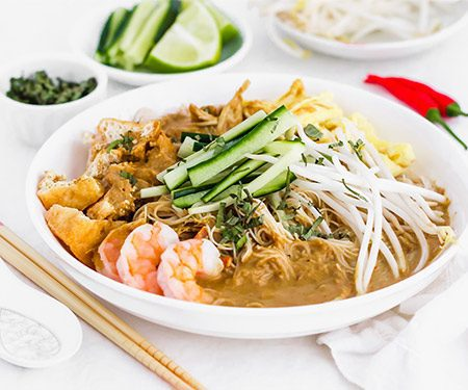
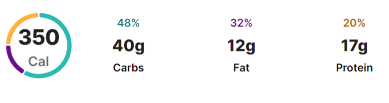

Laksa Sarawak


Just mention about laksa, surely many people love it. Various laksa dishes from each state have their own style and taste. Laksa Penang, Laksa Utara and Laksa Johor are already eaten, right? This time let's try something different by making this delicious Sarawak Laksa at home. Usually, laksa sauce uses fish as the main ingredient, rice laksa and spaghetti. But what is special about this Sarawak Laksa is that it uses chicken and mee hoon. People say if you don't know, then you don't love. So, try it once, you'll want it again.
Recipe:
Ingredients:
The Gravy
- 2 chicken breasts/chicken filling
- 200 grams of shrimp
- 2 liters of water
- 300 ml coconut milk
- 2 lemongrass sticks
- 1 chicken cube
- Salt to taste
Directions:
- Wash the chicken breast until clean. Then boil until the chicken is cooked and quite soft.
- After cooking, remove and drain the chicken breast (it can be shredded when it's cool)
- Using the chicken broth, blanch the shrimp in the chicken broth.
- Boil for about 1 minute. After a minute, remove and drain the shrimp.
- By using the chicken and shrimp stew earlier, add the pounded lemongrass into the cooking water.
- Add Sarawak laksa spice paste and chicken cubes. Cook over medium heat until boiling.
- After boiling, pour coconut milk into it and stir.
- Simmer on low heat so that the coconut milk does not break the oil.
- Then add salt and seasoning powder. After boiling and cooking, turn off the heat. The sauce for Sarawak laksa is ready to be served together with other ingredients.
The Noodles
- 1 packet of vermicelli
- Sufficient water
Directions:
- Heat water over medium heat. Wait until it boils.
- If it boils, add vermicelli noodles and boil until slightly soft.
- Vermicelli usually soften quickly in hot water. So don't boil it too long. If the noodles are overcooked, the vermicelli can be ruined and disintegrated.
Sambal shrimp paste
- Chili
- Red Chilli
- Belacan
- Salt
- Sugar
- Lime juice
Directions:
- Prepare chili padi, red chili and belacan.
- Blend together until smooth
- Add salt and a little sugar to taste
- Add the lime juice, then stir again slowly until combined.
Sarawak laksa decoration ingredients:
- The chicken that has been boiled in water is cooked
- Shrimp
- Thinly sliced omelette
- Blanched sprouts
- Cilantro
- Lime
- Sambal shrimp paste
Directions:
- Put meehoon in a bowl.
- Garnish with shredded chicken.
- Arrange the shrimp.
- Add bean sprouts and coriander leaves.
- Eat with sambal belacan and lemon tamarind.